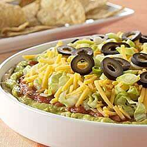

What is the perfect party food that the whole family will enjoy and beg for
more?
You guessed it, the 7 layer dip. Always a crowd pleaser, whether it be
for football parties or neighborhood get togethers. Just be sure to buy
enough chips to dip in!
The best part about this dip is how easy
it is to make and no cooking involed. You can also adjust or substitute ingredients and make it as
spicy as you like.
Ingredients
1 can refried beans
I can salsa
1 package fajita seasoning mix
2 ripe avocadoes
1/2 cup sour cream
1 chopped green onion
1 cup shredded cheddar cheese
Steps
- Spread the refried beans on the bottom of a casserole dish.
- Spread salsa over the beans.
- Smash the avocadoes with a fork
and spread it on top of the salsa.
- Mix the sour cream with the fajita seasoning mix and spread the mixture
on top of the avocadoes.
- Finally put the cheese and but green onions on top of the dip.